Power flows from the battery through wires, a fuse, a switch and connectors into the hubs, and from there out to motors, servos and sensors. Once you understand that path, you'll wire things correctly the first time, track down problems faster, and know why a robot "feels different" late in a match.
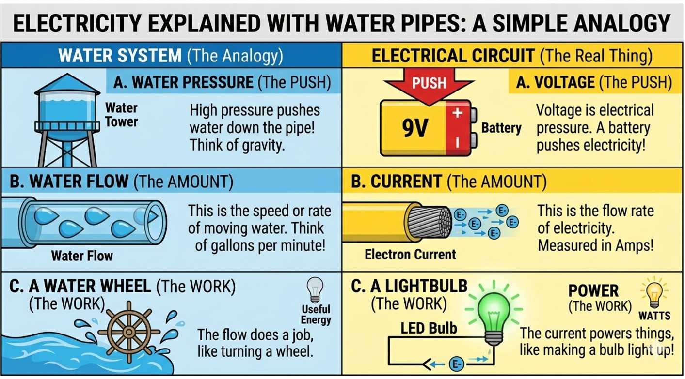
Voltage, measured in volts (V), is the electrical "pressure" that pushes charge through a wire. An FTC battery is nominally 12 V.
Current, measured in amps (A), is how much charge is actually flowing. An LED draws about 0.02 A. A drive motor pushing hard can pull 5–10 A. If all four drive motors stall at once, say while you're shoving another robot, the drivetrain can ask the battery for 40 A or more.
Power, measured in watts (W), is the two multiplied together: watts = volts × amps. A motor drawing 5 A at 12 V is using 60 W, about the same as an old-style light bulb.
Voltage pushes and current flows. Power is volts × amps. Big current is what heats wires, blows fuses and drains batteries.
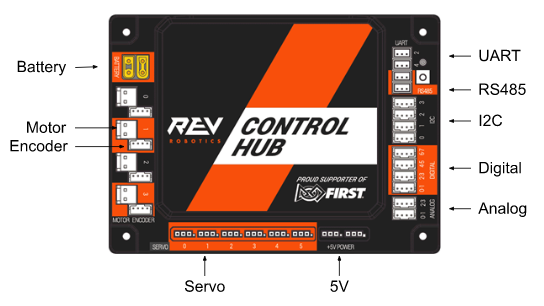
The Control Hub is the robot's brain and its power distribution board in one box. It runs your code, talks to the Driver Hub over Wi-Fi, and has:
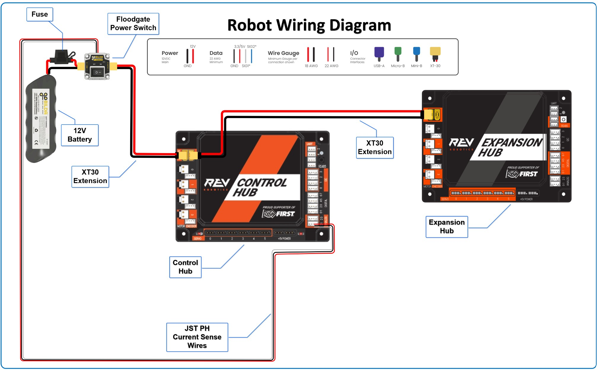
A fuse is a deliberate weak link. It contains a thin metal strip that melts and opens the circuit if too much current flows. The main power line has a 20 A fuse; on most FTC-legal battery packs it's built into the battery's lead. If a wire shorts or the drivetrain stalls hard for too long, the cheap fuse blows before the wiring, the battery or the hub is damaged.
The robot's main power switch is required by the rules. It has to be mounted where field staff can reach it and see it, because pressing it cuts all power at once and stops every motor. Put it somewhere a hand can find it quickly, not tucked behind a mechanism.
The fuse protects the robot from too much current. The switch lets a person turn the robot off instantly. Both sit in the main power line, before the hubs.
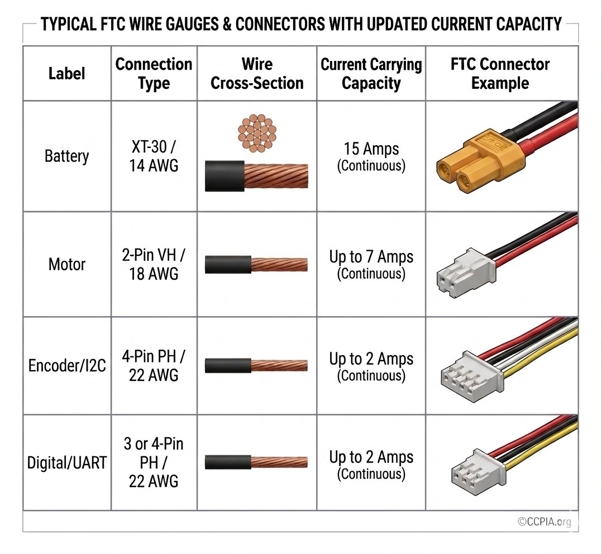
Wire thickness is given as a gauge (AWG, American Wire Gauge). The surprising part is that a lower number means a thicker wire, so 14 AWG is much thicker than 22 AWG. A thicker wire carries more current without heating up. Push too much current through a thin wire and it acts like a heater: it gets hot, voltage drops along it, and in the worst case the insulation melts.
| Job | Connector | Typical wire |
|---|---|---|
| Battery and main power | XT30 | 14 AWG |
| Motor power | 2-pin JST-VH | 18 AWG |
| Encoders and I2C sensors | 4-pin JST-PH | 22 AWG |
| Digital and analog sensors | 3- or 4-pin JST-PH | 22 AWG |
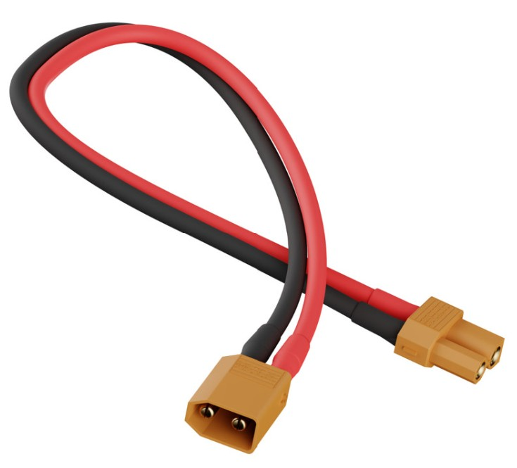
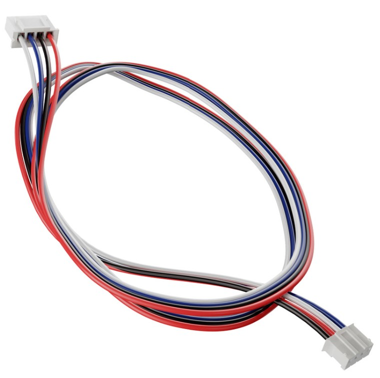
The XT30 is rated for about 15 A continuous, and more in short bursts. It's used for the battery, the hub power inputs and the power jumper between hubs. The tiny JST-PH connectors carry milliamp-level signals from encoders and sensors. Never run motor power through a signal connector.
Lower gauge means thicker wire. Use thick wire for power and thin wire for signals, and match each connector to its job.
The FTC battery is a 12 V NiMH (nickel-metal hydride) pack. It powers everything: both hubs, every motor, every servo and every sensor.
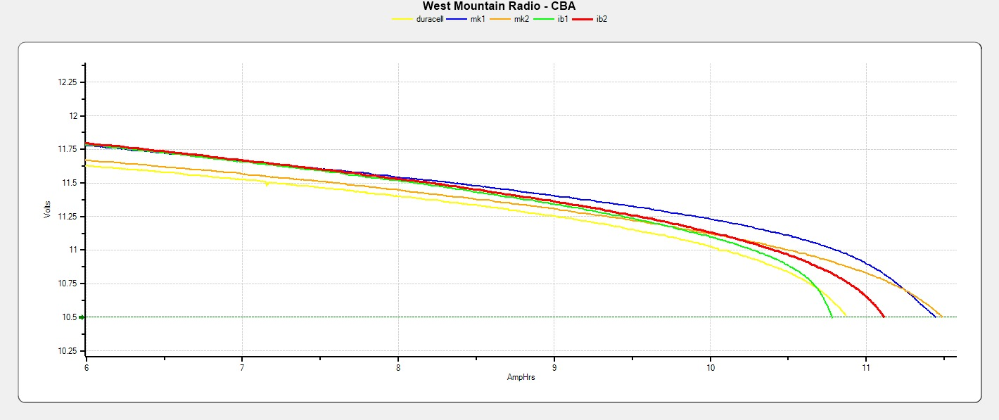
A battery doesn't give a steady 12 V and then suddenly stop. Under load, a full pack starts around 11.8 V and slowly slides down. Near empty, the curve falls off a cliff: the voltage collapses, the hub can't get enough power, and the robot browns out or reboots. The curves also show that batteries differ, both from brand to brand and as they age.
This changes how your robot behaves. motor.setPower(0.5) asks for half of whatever the battery is giving right now. At 11.8 V that's about 5.9 V at the motor. Late in a match at 10.8 V, the same line of code gives about 5.4 V, so the robot is slower and nothing in your code changed. That's one reason good teams use velocity control (setVelocity with encoders), which adjusts automatically as the battery sags.
Start every match on a freshly charged battery. Number your batteries, rotate through them, and check them with a battery tester. A half-charged battery is one of the most common reasons a robot runs inconsistently at a competition.
A DC motor turns electrical energy into rotation. Each motor port has its own built-in motor controller. Your code sends it a number from −1.0 to +1.0, and the controller turns that into voltage using PWM (pulse-width modulation). It switches the battery on and off thousands of times a second, and the fraction of time it's on sets the average voltage the motor sees.
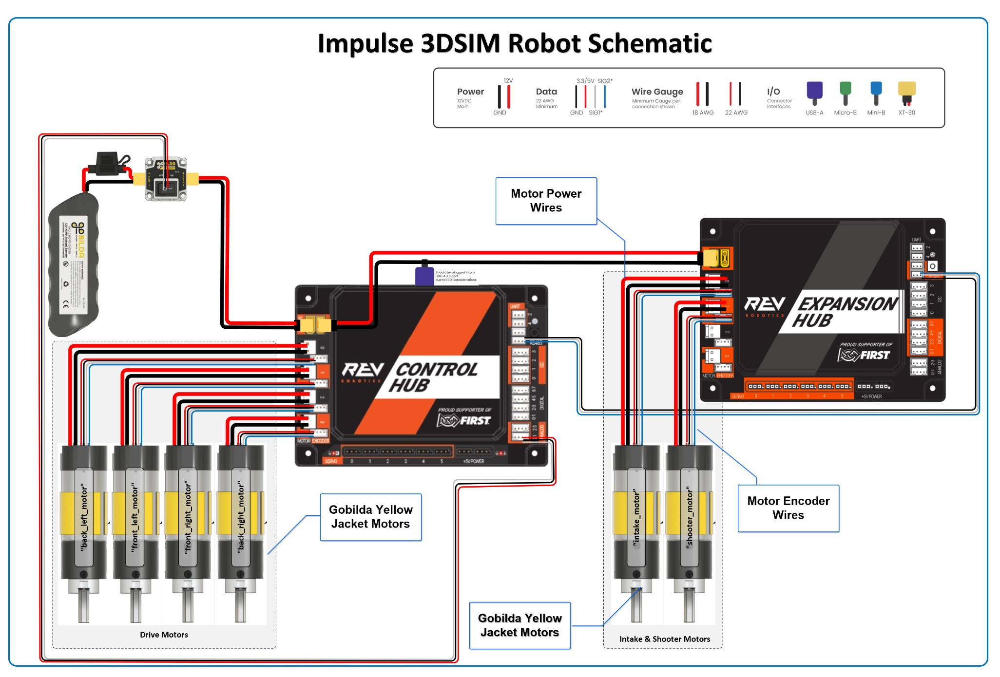
Each hub has four motor controllers, one per motor port. They use PWM to turn your −1.0 to +1.0 command into motor voltage. Every motor needs two cables: power and encoder.
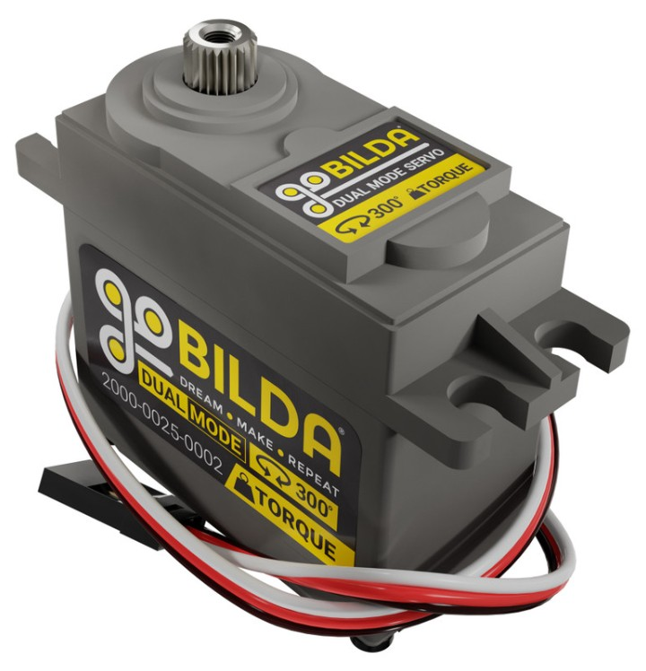
A standard servo moves to a position and holds it. You command 0.0–1.0 and it drives itself to that angle. A continuous rotation servo (CRServo) behaves more like a small motor: you give it a speed, not a position.
Servos plug into the servo ports (0–5). Servo power comes from a regulated supply inside the hub, not straight from the battery, so servos get a steady voltage as the battery sags. That supply is current-limited per pair of ports (0–1, 2–3, 4–5). A servo that jams and stalls can trip the protection and drop power to the other servo in its pair too. If two servos keep twitching together, look for something binding.
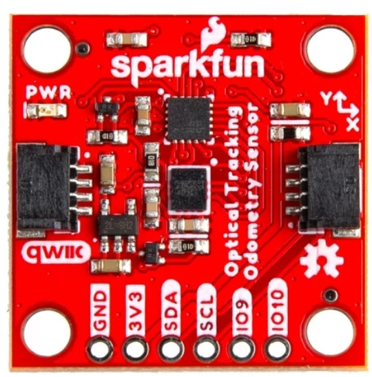
Sensors are how the robot perceives the world. Each one measures something, such as distance, color, heading or position, and sends a number to the hub. Your code reads that number and makes decisions. Most smart sensors plug into an I2C port with a 4-wire JST-PH cable. They draw only milliamps and get clean, regulated power from the hub, kept separate from the noisy 12 V motor supply.
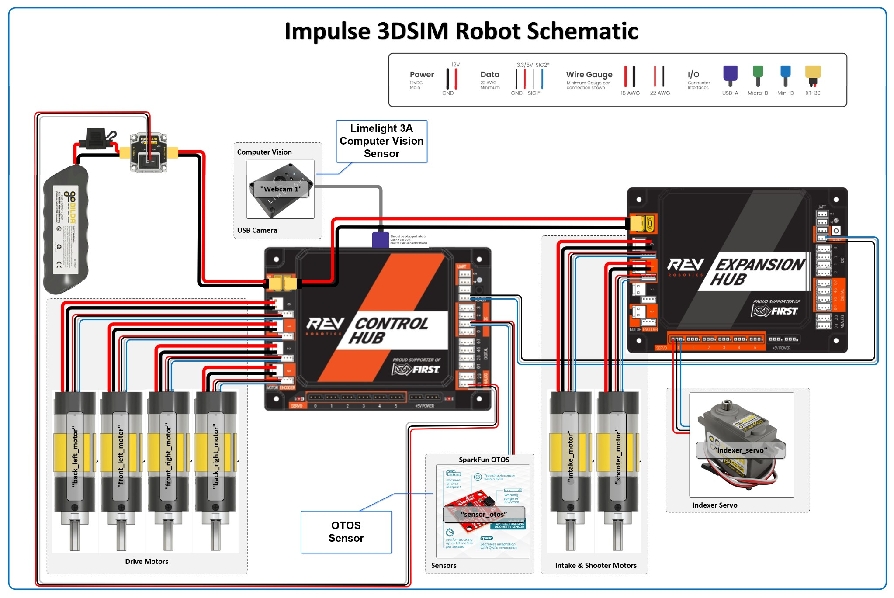
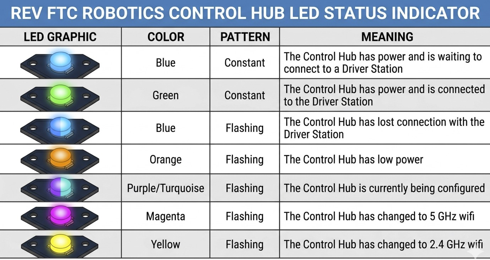
The status LED is the robot's check-engine light. The ones you'll see most:
Motor power
Servo power
Sensor power and data
It all starts with one battery. When four drive motors stall, all that current comes from the same pack that powers the hub's computer, which is why a hard shove can make the whole robot hiccup. If the robot slows down or resets in the middle of a match, now you know where to start looking.
setPower gets weaker as it does, and velocity control compensates.